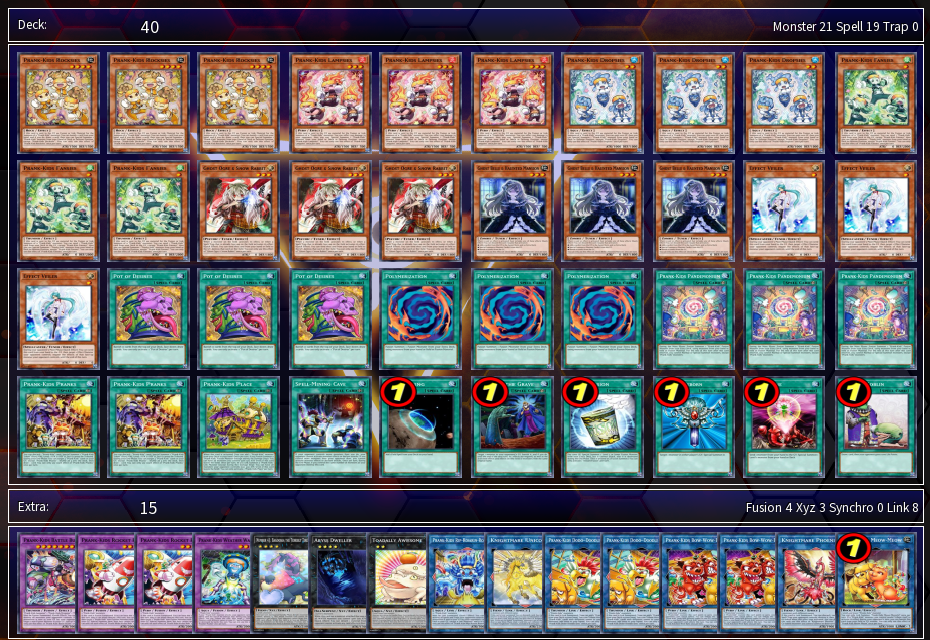
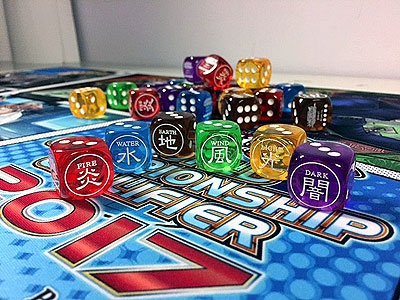
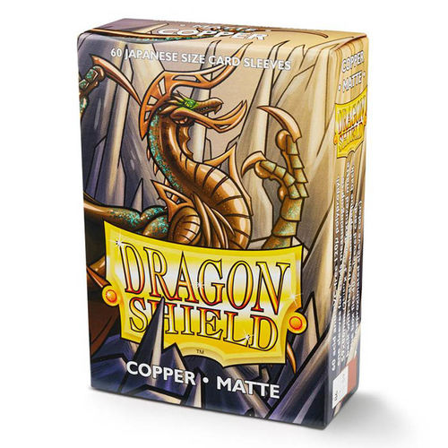
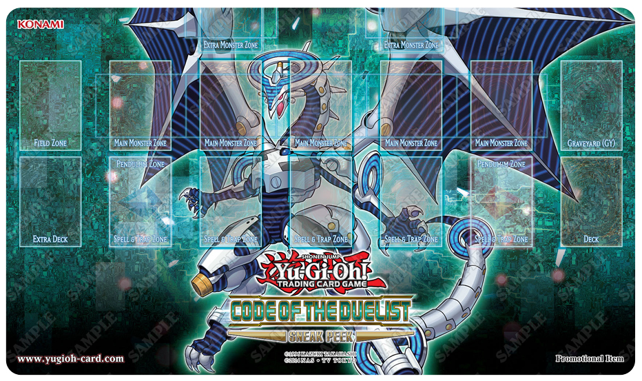

Training Duelist


Bienvenidos al Training Duelist, en esta página te daremos los mejores consejos e información necesaria para jugar y entender este increíble y entretenido juego.
En este juego, 2 jugadores (hasta 4 jugadores) se enfrentan en Duelos utilizando una variedad de Cartas de Monstruo, Mágicas y Trampa para derrotar a los monstruos de su adversario y ser el primero en reducir a 0 los LP (Life Points - Puntos de Vida) del otro.
Crea tu propio Deck
Deck (de 40 a 60 cartas)
Construye con tus cartas favoritas un Deck usando las siguientes reglas:
- El Deck debe tener de 40 a 60 cartas.
- Solo puedes tener hasta 3 copias de la misma carta en cualquier combinación de tu Deck, Deck Extra o Side Deck.
Además, algunas cartas están Prohibidas, Limitadas o Semi-Limitadas para su uso en torneos oficiales. Intenta mantener tu Deck cerca del mínimo de 40 cartas. Tener un Deck con demasiadas cartas hace que te sea difícil robar tus mejores cartas cuando las necesitas. Este Deck se llama Deck Principal.
Deck Extra (0 a 15 cartas)
Este deck consiste de Monstruos Xyz, Monstruos de Sincronía y Monstruos de Fusión, que pueden ser utilizados durante el juego si cumples con ciertas condiciones. Las reglas para el Deck Extra son:
- Puedes tener hasta 15 cartas en el Deck Extra.
- El Deck Extra puede contener Monstruos Xyz, Monstruos de Sincronía y Monstruos de Fusión, combinados de cualquier forma.
- Estas cartas no están contabilizadas en el límite mínimo de 40 cartas de tu Deck Principal.
Side Deck (0 a 15 cartas)
Éste es un grupo separado de cartas que puedes usar para modificar tu Deck. Durante un Match, después de cada Duelo, puedes intercambiar cualquier carta de tu Side Deck con una de tu Deck y/o tu Deck Extra para ajustar tu estrateria contra tu adversario. El número de cartas en tu Side Deck no puede ser mayor de 15. El número de cartas de tu Side Deck antes y después del intercambio de cartas debe ser exactamente el mismo.
Objetos adicionales que puedes necesitar
Moneda
Algunas cartas te piden que lances una moneda. Si juegas con esta clase de cartas, ten una moneda lista para lanzar.
Dados
Como con la moneda, hay algunas cartas que harán necesario que lances un dado. Si juegas con esta clase de cartas, ten preparado un dado común, con los números del 1 al 6.
Contadores
Algunas cartas requerirán que uses contadores para llevar cuenta de cosas como el número de turnos transcurridos o el nivel de poder de una carta. Puedes usar objetos pequeños como cuentas de cristal, sujetapapeles o monedas pequeñas como contadores, colocándoloes sobre estas cartas boca arriba.
Fichas de Monstruo
Son utilizadas para representar monstruos que pueden ser creados por efectos de cartas. Cualquier objeto como Ficha necesita tener dos modos distintos de colocarlo, para indicar claramente la posición de batalla del monstruo.
Objetos que pueden ayudarte durante un Duelo
Calculadora
Los LP cambian rápidamente durante un Duelo. Es prudente usar una calculadora para llevar la cuenta de tus LP. Durante Duelos importantes también deberías llevar la cuenta de tus LP en un papel para tener mayor seguridad.
Protectores de Cartas (Fundas)
Los protectores de cartas pueden ayudar a prevenir que tus cartas sean dobladas o raspadas. Si los usas, tienen que ser todos iguales para que tus cartas no estén marcadas.
El Tablero de Juego
El tablero de juego te ayuda a organizar tus cartas durante un Duelo. Cuando utiliza tus cartas colócalas sobre el Tablero de Juego. Los diferentes tipos de cartas son colocados en las diferentes Zonas. Cada Duelista tiene su propio Tablero (también llamado Tapete); colócalos juntos durante el Duelo. Este especio combinado recibe el nombre de Campo. El Tablero de Juego incluido en este producto es solamente para la mitad del Campo. Las cartas que tú "controlas" sonlas cartas de tu lado del Campo. También puedes tener un Duelo sin Tablero de Juego siempre y cuando recuerdes dónde colocar las cartas.
- Zona de Monstruos
- Zona de Magia y Trampas
- Cementerio
- Zona del Deck
- Zona del Campo
- Zona de Deck Extra
- Zona de Péndulo
Aquí es donde pones tus monstruos al jugarlos. Sólo puedes tener hasta 5 Cartas de Monstruos aquí en un momento determinado. Hay 3 formas principales de poner tus cartas de Monstruos: Posición de Ataque boca arriba, Posición de Defensa boca arriba y Posición de Defensa boca abajo. Pon la carta de forma vertical si está en Posición de Ataque y en forma horizontal si está en Posición de Defensa.
Aquí es donde pones tus Cartas Mágicas y de Trampa. Puedes tener hasta 5 cartas en esta zona. Colócalas boca abajo, o boca arriba para activarlas. Como una Carta Mágica se pone en esta zona cuando es activada, no puedes usar otras Cartas mágicas si los 5 espacios están ya ocupados.
Cuando las Cartas de Monstruos son destruidas, y cuando las Cartas Mágicas y de Trampa son usadas, son mandadas boca arriba a este espacio. El contenido de los Cementerios de ambos jugadores es de conocimiento público y tu adversario puede mirar el tuyo en cualquier momento del Duelo. El orden de las cartas en el Cementerio no se debe cambiar.
Tu Deck se pone boca abajo en este espacio. De aquí, los jugadores roban cartas para su mano. Si el efecto de una carta requiere que reveles cartas de tu Deck, o has de revisarlo, baraja el Deck y ponlo de vuelta en este espacio después de resolver el efecto.
Las Cartas Mágicas especiales llamadas “Cartas Mágicas de Campo” se juegan aquí. Cada jugador puede tener 1 Carta Mágica de Campo en su lado del Campo. Para usar otra Carta Mágica de Campo, manda al Cementerio a la que tenías previamente. Las Cartas Mágicas de Campo no cuentan para el límite de 5 cartas de tu Zona de Magia y Trampas.
Coloca tu Deck Extra boca abajo en este espacio. Puedes mirar las cartas de tu propio Deck Extra durante el juego. Esta zona era anteriormente para la Deck de Fusión. Cualquier efecto de cartas aplicado al Deck de Fusión se aplicarán ahora al Deck Extra.
Cuando activas una Carta de Monstruo de Péndulo como una Carta Mágica, la pones boca arriba en este espacio. Las Cartas de Monstruo de e Péndulo jugadas como Cartas Mágicas no cuentan para el límite de 5 cartas de tu Zona de Magia y Trampas o tu Zona de Monstruos.